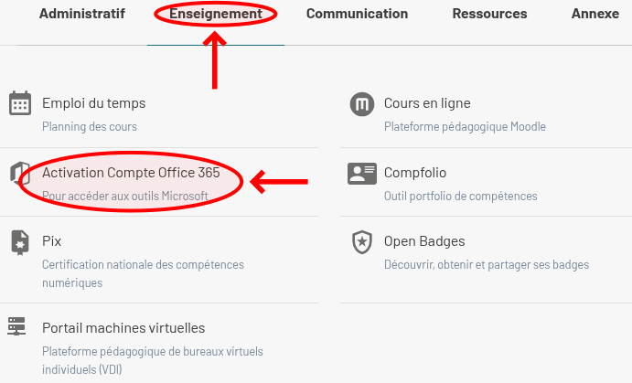
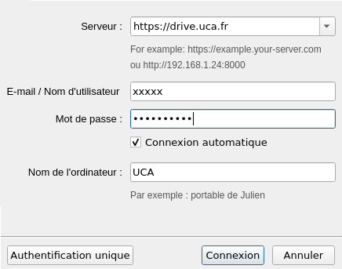

Règles et outils UCA
Prise en main et outils essentiels
ENT
L'ENT (https//ent.uca.fr/) est le portail d'accès aux différents services numériques de l'UCA. Il vous permettra de consultrer votre calendrier, vos mails, etc.
Mails
L'ENT affiche le nombre de mails non-lus. En cliquant dessus, vous ouvrez le client Web Zimbra.
Vous pouvez également utiliser un autre client de messagerie (e.g. Outlook ou Thunderbird).
Vous devez consulter et lire vos mails très régulièrement.
Calendrier
Pour que votre emploi du temps s'affiche sur l'ENT, il vous faudra renseigner votre calendrier. Pour cela, cliquez sur le symbole "⋮" en haut à droite du bloc de calendrier, puis sur "Sélectionner mes groupes".
Vous trouverez les calendriers de la formation dans "IUT Clermont-Auvergne - Sites 63, 15, 43", puis dans "SD" (">" pour dérouler les catégories). Enfin, sélectionnez votre groupe de TP, puis cliquez sur "Sauvegarder la sélection".

Vous pouvez aussi accéder à l'intégralité de votre calendrier sur ADE, en cliquant sur l'icône "Emploi du temps", dans le bloc "Raccourcis". Vous pourrez alors aussi exporter votre calendrier UCA afin de le visualiser dans l'application de votre choix (e.g. Google Calendar, Thunderbird, etc.). Pour cela il vous suffit de cliquer sur l'icône d'exportation en haut à droite d'ADE :


L'emploi du temps pouvant être amené à évoluer, il est important de le consulter très régulièrement.
Moodle
- Moodle -> export calendrier des rendus. -> TdB -> en bas "Importer ou exporter des calendrier" -> "Exporter le calendrier" -> "Tous les événements" + "Intervalle personnalisé" -> URL du calendrier -> Mes cours -> "BUT Science des Données" -> "Liste" + en bas Afficher : Tout => les 2 modules. -> déposer un rendu -> on peut modifier le travail -> premier rendu -> tj déposer une version initial Moodle.Vous trouverez aussi diverses informations officielles dans les espaces Moodle suivants :
- scolarité : "Informations aux usagers".
- département : BUT SD : Informations générales (règlement intérieur, programme, congés, stage, guide ENT, etc).
MyUCA
Odin
- odin.iut.uca.fr - Etudiants -> Renseignements (capture écran). - addr univ vs familial. - année N-1 et N-2 - puis recharger page. - notes - absences - EdT (pas fiable). - notes parler de la validation. - abs - rappel règlement. - crédit jours - justifier (pièce jointe). -> + indiquer [TEST] dans le justificatif. -> fournir pièce jointe.Validation des UE
À l'IUT, les différentes matières de chaque année sont regroupées au sein de 4 UE (Unité d'Enseignement) :
- UE1 : informatique
- UE2 : statistiques
- UE3 : humanités
- UE4 : parcours (2A - 3A).
Le passage à l'année suivante requiert de valider toutes les UE (de l'année actuelle, mais aussi des années précédentes), sauf une qui doit avoir une moyenne d'au moins 8. L'acquisition du diplôme requiert de valider toutes les UE.
Une UE est validée lorsque sa moyenne annuelle est au moins 10, ou lorsque la même UE est validée l'année suivante.
Absences
À l'IUT la présence en cours (et la ponctualité) est obligatoire. En cas d'absence vous devez prévenir le secrétariat :
- absence prévisible : dès la date de l'absence connue.
- absence imprévisible : dans les 48h suivant le début de l'absence (sauf cas de force majeur).
Les absences sont comptées par jours. Une absence est comptée dès lors que l'étudiant est :
- absent à l'un de ses enseignement de la journée ;
- exclus de cours pour raison disciplinaire ;
- non-accepté en cours pour raison de retard.
Toute absence doit être justifiée sur Odin dans les 48h suivant le retour, avec en pièce jointe :
- maladie : certificat médical avec les dates d'absences, ou avis de l'infirmière ou du Service de médecine préventive.
- convocation : une copie de la convocation.
- force majeure : explication par écrit, datée et signée.
- crédits-jours : capture d'écran de l'application.
En cas d'absence à une évaluation (e.g. DS, TP noté), l'étudiant doit contacter l'enseignant du module par mail, dans les 8 jours suivant son retour. Toute absence à l'épreuve de rattrapage, même justifiée, vaudra un 0 à l'épreuve.
Les apprentis ont un status différent, et doivent justifier leurs absences par un arrêt de travail. Ils ne bénéficient ainsi pas des crédits-jours.
À l'UCA les étudiants bénéficient de 4 crédits-jours maladie dans l'année, permettant de justifier une absence pour maladie, sans certificat médical (2 jours consécutifs maximum). Des crédits-jours supplémentaires peuvent être attribués :
- aménagements spécifiques : 10 crédits-jours sur prescription médicale SSE/PSHE.
- troubles menstruels : 10 crédits-jours (dispositif à activer en début d'année).
Pensez à bien demander les aménagements nécessaires, ainsi qu'à justifier toutes vos absences. Au delà de 2 absences injustifiées dans l'année, une procédure de défaillance pourra être engagée à l'encontre de l'étudiant. Si la défaillance n'est pas levée à la fin de l'année scolaire, l'étudiant sera exclu de la formation.
Utiliser un crédit-jour
Déposer une justification sur Odin
Accès aux ressources
Office 365
L'UCA vous fournit une licence Microsoft 365, vous donnant accès aux principales applications de la suite Office, notamment Word, Excel, PowerPoint et Outlook. Pour en bénéficier, il vous faudra tout d'abord l'activer.
Pour cela, affichez la liste complète des services en cliquant sur le symbole ">" situé à droite du panneau latéral gauche.


Dans l'onglet "Enseignement", cliquez sur "Activation Compte Office 365". Dans la page qui s'affiche, cliquez sur le bouton "Je demande mon compte" du panneau latéral gauche.
WiFi
Eduroam fourni un accès WiFi sur les campus européens accessible à tout étudiant inscrit dans une université européenne. Pour vous connecter au réseau Eduroam, il vous faudra renseigner :
- Établissement : Université Clermont Auvergne.
- Login : votre adresse mail étudiante UCA.
- Mot de passe : le mot de passe de votre compte UCA.
En fonction de l'appareil utilisé, vous devrez :
- Windows : se connecter au réseau "eduroam".
- Linux/Chrome OS/Mac OS : télécharger Eduroam Cat, puis importez le fichier téléchargé dans :
- Chrome OS: "chrome://network" > "Général" > "Import ONC File".
- Mac OS: "Préférences Systèmes" > "Profils".
- Téléphone : installer l'application "GetEduroam".
Android
 iOS
iOS
Plus d'informations dans la documentation officielle.
Poste de travail
Environnement de travail
Vos fichiers
Sur les postes de travail UCA, vous disposez de 2 dossiers personnels :
- (2Go) : aussi appelé home, sauvegardé régulièrement.
- (20Go) : à privilégier pour les fichiers volumineux.
Le dépassement de votre quota peut entraîner des erreurs informatiques lors des TP. Pensez ainsi à régulièrement vider votre corbeille, ainsi que votre dossier de téléchargement.
Votre home est usuellement structuré de la sorte :
Les fichiers commençant par sont des fichiers cachés. Par défaut, ils ne s'affichent pas dans l'explorateur de fichier.
On ne TOUCHE PAS aux fichiers inconnus, même pour faire de la place !
Politique d'organisation de vos fichiers
Afin de faciliter les opérations de recherche, de sauvegardes, et d'archivage, il est important de ne pas enregistrer tous vos fichiers dans le même dossier. Vous devez ainsi définir votre propre politique d’organisation de vos fichiers, c’est-à-dire mettre en place une structure de dossiers organisée, cohérente et pérenne, et vous y tenir. Une bonne organisation de vos fichiers vous permettra notamment d’éviter les erreurs, comme rendre le mauvais fichier lors d’un TP.
Voici un exemple de structure que vous pouvez adopter :
Mode DS
- auds => procédure (click mdp avant changer) - pas accès internet et pas fichiers. - rendu + mon system. - glisser déposer - ne pas trop attendre + fraude + mon system. - puis redémarrer (et select gnome3).Services et ressources
Impressions
Partage de fichiers
Pour partager des fichiers/dossiers avec un tiers, vous pouvez utiliser :
- FileSender : envoyer des fichiers volumineux (jusqu'à 100Go). Ce service Renater est accessible via votre compte UCA. Il permet d'uploader des fichiers puis d'obtenir un lien de téléchargement, que vos pouvez ensuite transmettre à vos destinataires.
- homeweb : partager vos dossiers UCA sous la forme d'un lien URL. Le lien permet alors l'accès au dossier (en lecture ou en écriture) via l'interface Web de homeweb.
- UCA Drive : partager ou synchroniser des bibliothèques de fichiers (jusqu'à 50Go). Ce serveur de fichiers basé sur Seafile permet de partager des bibliothèques avec d'autres utilisateurs, de générer des liens de téléchargements, mais aussi de synchroniser des bibliothèques entre plusieurs postes de travail.
Ces outils ne sont pas adaptés au travail collaboratif sur du code. On utilisera alors Git (cf cours de 2A).
Pour synchroniser un dossier UCA Drive avec un ordinateur (ou un smartphone), vous devez installer le client Seafile (déjà installé sur les postes de travail UCA). Au lancement du client, vous devrez sélectionner un dossier dans lequel synchroniser vos dossiers UCA Drive (e.g. ), puis renseigner votre compte UCA Drive :

Vous pourrez ensuite :
- Créer une bibliothèque à partir d'un dossier : cliquer sur "Sélectionnez" en bas de la fenêtre.
- Synchroniser une bibliothèque avec un dossier : cliquer-droit sur la bibliothèque, puis "Synchroniser cette bibliothèque", "Synchroniser avec un dossier existant", puis "Choisir...".
Comme pour vos fichiers personnels, il faut convenir d'une politique. Par exemple, les bibliothèques partagées avec d'autres personnes pourront être synchronisées avec le dossier . Le dossier pourra alors servir à transférer des fichiers entre votre poste de travail UCA et vos ordinateurs personnels.
Accès au matériel
Accès à distance
- Guacamole > accueil : ctrl+shift+alt pour copier/coller avec Guacamole. - SCEPPrêt et réservations
L'université vous permet d'emprunter du matériel informatique :
- courte durée
- longue durée
- pour les examens
Vous pouvez aussi réserver des salles.